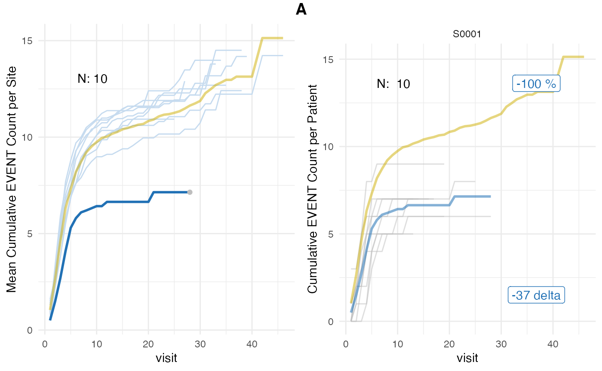

Introduction
Simulate adverse event reporting in clinical trials with the goal of detecting under-reporting sites.
Monitoring of Adverse Event (AE) reporting in clinical trials is important for patient safety. We use bootstrap-based simulation to assign an AE under-reporting probability to each site in a clinical trial. The method is inspired by the ‘infer’ R package and Allen Downey’s blog article: “There is only one test!”.
Adverse Events
An adverse event (AE) is any untoward medical occurrence in a patient or clinical investigation subject administered a pharmaceutical product and which does not necessarily have a causal relationship with this treatment. It is important for patient safety that AEs are reported back to the sponsor. An important part of quality monitoring is to detect clinical trial sites that are not propagating all of the AEs reported to them by their patients to the sponsor. In a clinical trial patients follow a strict visiting schedule at which times treatments are given and exams are being performed. Typically AEs get reported by a patient when they are at an on-site visit at the clinic. So the total number of AEs reported by a site depends on the number of patients enrolled at the site and the total number of visits.
Algorithm
In a nutshell we will perform the following steps.
- Record visit_med75, number of patients that have reached visit_med75, mean cumulative AE count at visit_med75 for a clinical trial site.
- Create patient pool with all patients in study that have reached visit_med75 as determined in 1) and their cumulative AE count at visit_med75.
- Draw with replacement as many patients from 2) as determined in 1) and calculate the mean cumulative AE count of the draw (figure 1b).
- Repeat 3) 1000 times.
- Calculate probability of obtaining mean cumulative AE count or lower as obtained in 1) based on results of 4).
- Repeat 1-5) for all sites in trial.
- Adjust probabilities using the Benjamin Hochberg Procedure in order to correct alpha error.
Sample Data
Patient
Patient level AE data is characterized by the number of consecutive visits and the number of AEs that have been reported each time. For the maximum consecutive visit we sample from a normal distribution and for the AEs reported at each visit we sample from a poisson distribution.
Here we simulate the AEs generated by 3 patients
set.seed(1)
replicate(
3,
sim_test_data_patient(
.f_sample_max_visit = function() rnorm(1, mean = 20, sd = 4),
.f_sample_ae_per_visit = function(max_visit) rpois(max_visit, 0.5)
)
)## [[1]]
## [1] 0 1 1 2 4 5 6 6 6 6 7 7 8 8 9 12 12
##
## [[2]]
## [1] 0 1 1 1 1 1 1 2 2 2 2 2 2 3 4 5 5 6 6 7 8 9 9
##
## [[3]]
## [1] 0 0 1 2 2 3 3 3 3 3 3 3 4 4 6 6 6 6 7 7Study
In order to simulate patient data for an entire study we assume make the simplification that all sites have the same number of patients. Further we specify a fraction of sites that is under-reporting AEs.
df_visit <- sim_test_data_study(
n_pat = 120,
n_sites = 6,
frac_site_with_ur = 0.4,
ur_rate = 0.6,
max_visit_mean = 20,
max_visit_sd = 4,
ae_per_visit_mean = 0.5
)
df_visit$study_id <- "A"
df_visit %>%
head(10) %>%
knitr::kable()| patnum | site_number | is_ur | max_visit_mean | max_visit_sd | ae_per_visit_mean | visit | n_ae | study_id |
|---|---|---|---|---|---|---|---|---|
| P000001 | S0001 | TRUE | 20 | 4 | 0.2 | 1 | 0 | A |
| P000001 | S0001 | TRUE | 20 | 4 | 0.2 | 2 | 1 | A |
| P000001 | S0001 | TRUE | 20 | 4 | 0.2 | 3 | 1 | A |
| P000001 | S0001 | TRUE | 20 | 4 | 0.2 | 4 | 2 | A |
| P000001 | S0001 | TRUE | 20 | 4 | 0.2 | 5 | 2 | A |
| P000001 | S0001 | TRUE | 20 | 4 | 0.2 | 6 | 2 | A |
| P000001 | S0001 | TRUE | 20 | 4 | 0.2 | 7 | 2 | A |
| P000001 | S0001 | TRUE | 20 | 4 | 0.2 | 8 | 3 | A |
| P000001 | S0001 | TRUE | 20 | 4 | 0.2 | 9 | 4 | A |
| P000001 | S0001 | TRUE | 20 | 4 | 0.2 | 10 | 4 | A |
| site_number | is_ur |
|---|---|
| S0001 | TRUE |
| S0002 | TRUE |
| S0003 | FALSE |
| S0004 | FALSE |
| S0005 | FALSE |
| S0006 | FALSE |
In our sample data 2 sites (S0001 and S0002) are under-reporting AEs
Algorithm Execution
S3 interface
We will describe the internal details of the algorithm next. However, it is recommended to use the S3 interface, which manages the execution of the internal functions and stores the intermediate results.
aerep <- simaerep(df_visit)
aerep## simaerep object:
## Check aerep$df_eval prob_low_prob_ur column for AE under-reporting probabilites.
## Plot results using plot() generic.Specifying the Evaluation Point visit_med75
In an ongoing trial all patients will have a different number of consecutive visits. To find a cut-off visit to normalize the data we specify a single evaluation point for a given site based on the number of visits of the patient population.
For determining the visit number at which we are going to evaluate AE reporting we take the maximum visit of each patient at a site and take the median. Then we multiply with 0.75 which will give us a cut-off point determining which patient will be evaluated. Of those patients we will evaluate we take the minimum of all maximum visits hence ensuring that we take the highest visit number possible without excluding more patients from the analysis. In order to ensure that the sampling pool for that visit is large enough we ensure that at least 20% of all patients at the study are available for sampling. We limit visit_med75 to the 80% quantile of all patient maximum visits of the entire study.
For this we use site_aggr to aggregate the simulated
visit level data to site level. Adjusting min_pat_pool will
change the minimum ratio of patients available for sampling that
determines the maximum values for visit_med75.
| study_id | site_number | n_pat | n_pat_with_med75 | visit_med75 | mean_ae_site_med75 |
|---|---|---|---|---|---|
| A | S0001 | 20 | 17 | 15 | 3.000000 |
| A | S0002 | 20 | 17 | 14 | 3.352941 |
| A | S0003 | 20 | 16 | 17 | 8.500000 |
| A | S0004 | 20 | 17 | 16 | 8.058824 |
| A | S0005 | 20 | 18 | 16 | 7.555556 |
| A | S0006 | 20 | 20 | 15 | 7.850000 |
plot_visit_med75(df_visit, df_site, study_id_str = "A", n_site = 6)## purple line: mean site ae of patients with visit_med75
## grey line: patient included
## black dashed line: patient excluded
## dotted vertical line: visit_med75, 0.75 x median of maximum patient visits of site
## solid vertical line: visit_med75 adjusted, increased to minimum maximum patient visit of included patients
## dashed vertical line: maximum value for visit_med75 adjusted, 80% quantile of maximum patient visits of study
Using the adjusted visit_med75 will drop a few patients (dashed
lines) but will by definition at least include 50% of all patients
favoring patients that have higher number of visits. By looking at the
mean ae development (purple line) we can already easily spot the two
under-reporting sites. The same goes for looking at the
mean_ae_site_med75 column in df_site. Next we
will use bootstrap simulations to determine the probability for
obtaining each mean AE value or lower at visit_med75 by chance.
Bootstrap Simulations
Advantage Over Classic Statistical Tests
We could use a classical parametric test and calculate the probability with which we can reject the NULL hypothesis for the AE counts that we observe at the visit_med75.
As we sample the AEs from a poisson distribution the R implementation of the poisson.test would be appropriate.
But there are four major problems that we often encounter when we try to describe real life count data with the poisson distribution which is only described by a single parameter:
- over and underdispersion
- skewness (long right tail)
- inflated zeros
- variance mean relationship might not be fixed
(see Distribution for Modelling Location Scale and Shape 5.1.2)
The true distribution of the AE counts will vary from study to study with the degree of the influence of these 4 problems being unknown unless thoroughly investigated.
With the non-parametric approach that we propose we do not need to worry about these statistical assumptions. Since the distribution of the AE count from the simulated patient pool we draw from will be very close to the unknown true distribution of the underlying AE generating process.
Disadvantages Over Classic Statistical Tests
- Upper Limit for Uncompliant Sites. We simulate an underlying compliant patient population using the data we are given. If the fraction of uncompliant examples becomes too high, detection rates will decrease. We find that detection rates start decreasing with 30-50% of under-reporting sites and are not usable anymore if a majority > 50% of all sites are under-reporting see article on usability limits.
- Lower Probability Limit The number of repeats determines the smallest probability greater than zero, for example a for r=1000 the smallest value greater than zero is 0.001
- Computationally Expensive
Methodology
How likely is it to get a mean AE value that is equal or lower to what we observe at site C with the same number of patients?
For illustration purposes we start to simulate 10 hypothetical patient groups for site C by drawing (with replacement) from all patients in the study marking those for which we have obtained an equal or lower mean AE value than initially observed (middle).
Instead of 10 times we simulate 1000 times and count how many times we have observed an equal or lower mean AE value than initially observed and convert it to a percentage (right).
To illustrate the effect of under-reporting we repeat the same process after having removed 2 AEs per patient from site C. We see how the probability for obtaining an equal or lower mean AE value than initially observed decreases (bottom).
plot_sim_examples(size_dot = 4, size_raster_label = 10)
Application
We can run the above described simulation and as a benchmark also perform a poisson test.
df_sim_sites <- sim_sites(df_site, df_visit, r = 1000, poisson_test = TRUE)
df_sim_sites %>%
kable()| study_id | site_number | n_pat | n_pat_with_med75 | visit_med75 | mean_ae_site_med75 | mean_ae_study_med75 | n_pat_with_med75_study | pval | prob_low |
|---|---|---|---|---|---|---|---|---|---|
| A | S0001 | 20 | 17 | 15 | 3.000000 | 6.712644 | 87 | 0.0e+00 | 0 |
| A | S0002 | 20 | 17 | 14 | 3.352941 | 6.021739 | 92 | 7.5e-06 | 0 |
| A | S0003 | 20 | 16 | 17 | 8.500000 | 6.513514 | 74 | 1.0e+00 | 1 |
| A | S0004 | 20 | 17 | 16 | 8.058824 | 6.261905 | 84 | 1.0e+00 | 1 |
| A | S0005 | 20 | 18 | 16 | 7.555556 | 6.349398 | 83 | 1.0e+00 | 1 |
| A | S0006 | 20 | 20 | 15 | 7.850000 | 5.690476 | 84 | 1.0e+00 | 1 |
We find that the probability of getting a mean ae at visit_med75 for sites S0001 and S0002 is 0 or near zero.
Alpha Error Correction
Our simulated test data set consists of just 6 sites. However, it is
not uncommon for 100 sites or more to participate in the same clinical
trial. This would mean that we need to perform 100 statistical tests,
and applying a 5% significance threshold would lead to on average of 5
False Positives (FP). We therefore need to adjust the calculated
p-values and bootstrapped probabilities using
stats::p.adjust(p, method = "BH"), which applies the Benjamin
Hochberg Procedure. eval_sites() uses the the inverted
adjusted values to calculates the final bootstrapped AE under-reporting
probability (prob_low_prob_ur) and includes the poisson test derived
under-reporting probability as a reference (pval_prob_ur).
df_eval <- eval_sites(df_sim_sites, method = "BH")
df_eval %>%
kable()| study_id | site_number | n_pat | n_pat_with_med75 | visit_med75 | mean_ae_site_med75 | mean_ae_study_med75 | n_pat_with_med75_study | pval | prob_low | pval_adj | pval_prob_ur | prob_low_adj | prob_low_prob_ur |
|---|---|---|---|---|---|---|---|---|---|---|---|---|---|
| A | S0001 | 20 | 17 | 15 | 3.000000 | 6.712644 | 87 | 0.0e+00 | 0 | 0.00e+00 | 1.0000000 | 0 | 1 |
| A | S0002 | 20 | 17 | 14 | 3.352941 | 6.021739 | 92 | 7.5e-06 | 0 | 2.24e-05 | 0.9999776 | 0 | 1 |
| A | S0003 | 20 | 16 | 17 | 8.500000 | 6.513514 | 74 | 1.0e+00 | 1 | 1.00e+00 | 0.0000000 | 1 | 0 |
| A | S0004 | 20 | 17 | 16 | 8.058824 | 6.261905 | 84 | 1.0e+00 | 1 | 1.00e+00 | 0.0000000 | 1 | 0 |
| A | S0005 | 20 | 18 | 16 | 7.555556 | 6.349398 | 83 | 1.0e+00 | 1 | 1.00e+00 | 0.0000000 | 1 | 0 |
| A | S0006 | 20 | 20 | 15 | 7.850000 | 5.690476 | 84 | 1.0e+00 | 1 | 1.00e+00 | 0.0000000 | 1 | 0 |
Plot Results
plot_study will plot mean ae development of all sites
and visit level data for each flagged site with an AE under-reporting
threshold of 95%.
plot_study(df_visit, df_site, df_eval, study = "A")
Applying {simaerep}
Instead of executing all previous steps manually we can also use the
S3 interface which manages all intermediate results and provides more
convenient plotting using the plot() generic function.
aerep <- simaerep(df_visit)
aerep## simaerep object:
## Check aerep$df_eval prob_low_prob_ur column for AE under-reporting probabilites.
## Plot results using plot() generic.
str(aerep)## List of 7
## $ visit :List of 3
## ..$ dim : int [1:2] 2336 9
## ..$ df_summary: tibble [1 × 5] (S3: tbl_df/tbl/data.frame)
## .. ..$ n_studies : int 1
## .. ..$ n_sites : int 6
## .. ..$ n_patients: int 120
## .. ..$ n_visits : int 2336
## .. ..$ n_aes : int 942
## ..$ str_call : chr "df_visit"
## ..- attr(*, "class")= chr "orivisit"
## $ df_site : tibble [6 × 6] (S3: tbl_df/tbl/data.frame)
## ..$ study_id : chr [1:6] "A" "A" "A" "A" ...
## ..$ site_number : chr [1:6] "S0001" "S0002" "S0003" "S0004" ...
## ..$ n_pat : int [1:6] 20 20 20 20 20 20
## ..$ n_pat_with_med75 : int [1:6] 17 17 16 17 18 20
## ..$ visit_med75 : Named num [1:6] 15 14 17 16 16 15
## .. ..- attr(*, "names")= chr [1:6] "80%" "80%" "80%" "80%" ...
## ..$ mean_ae_site_med75: num [1:6] 3 3.35 8.5 8.06 7.56 ...
## $ df_sim_sites : tibble [6 × 9] (S3: tbl_df/tbl/data.frame)
## ..$ study_id : chr [1:6] "A" "A" "A" "A" ...
## ..$ site_number : chr [1:6] "S0001" "S0002" "S0003" "S0004" ...
## ..$ n_pat : int [1:6] 20 20 20 20 20 20
## ..$ n_pat_with_med75 : int [1:6] 17 17 16 17 18 20
## ..$ visit_med75 : Named num [1:6] 15 14 17 16 16 15
## .. ..- attr(*, "names")= chr [1:6] "80%" "80%" "80%" "80%" ...
## ..$ mean_ae_site_med75 : num [1:6] 3 3.35 8.5 8.06 7.56 ...
## ..$ mean_ae_study_med75 : num [1:6] 6.71 6.02 6.51 6.26 6.35 ...
## ..$ n_pat_with_med75_study: int [1:6] 87 92 74 84 83 84
## ..$ prob_low : num [1:6] 0 0 1 1 1 1
## $ df_eval : tibble [6 × 11] (S3: tbl_df/tbl/data.frame)
## ..$ study_id : chr [1:6] "A" "A" "A" "A" ...
## ..$ site_number : chr [1:6] "S0001" "S0002" "S0003" "S0004" ...
## ..$ n_pat : int [1:6] 20 20 20 20 20 20
## ..$ n_pat_with_med75 : int [1:6] 17 17 16 17 18 20
## ..$ visit_med75 : Named num [1:6] 15 14 17 16 16 15
## .. ..- attr(*, "names")= chr [1:6] "80%" "80%" "80%" "80%" ...
## ..$ mean_ae_site_med75 : num [1:6] 3 3.35 8.5 8.06 7.56 ...
## ..$ mean_ae_study_med75 : num [1:6] 6.71 6.02 6.51 6.26 6.35 ...
## ..$ n_pat_with_med75_study: int [1:6] 87 92 74 84 83 84
## ..$ prob_low : num [1:6] 0 0 1 1 1 1
## ..$ prob_low_adj : num [1:6] 0 0 1 1 1 1
## ..$ prob_low_prob_ur : num [1:6] 1 1 0 0 0 0
## $ param_site_aggr :List of 2
## ..$ method : chr "med75_adj"
## ..$ min_pat_pool: num 0.2
## $ param_sim_sites :List of 3
## ..$ r : num 1000
## ..$ poisson_test: logi FALSE
## ..$ prob_lower : logi TRUE
## $ param_eval_sites:List of 1
## ..$ method: chr "BH"
## - attr(*, "class")= chr "simaerep"
plot(aerep)## study = NULL, defaulting to study:A
For modifying the default parameters please check out the
simaerep() documentation.